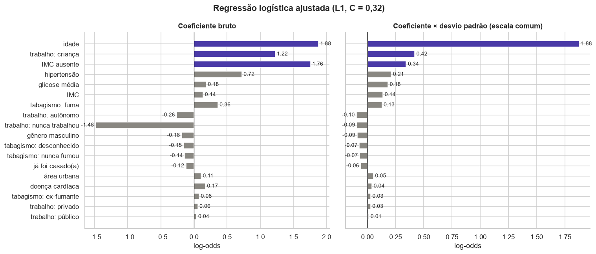
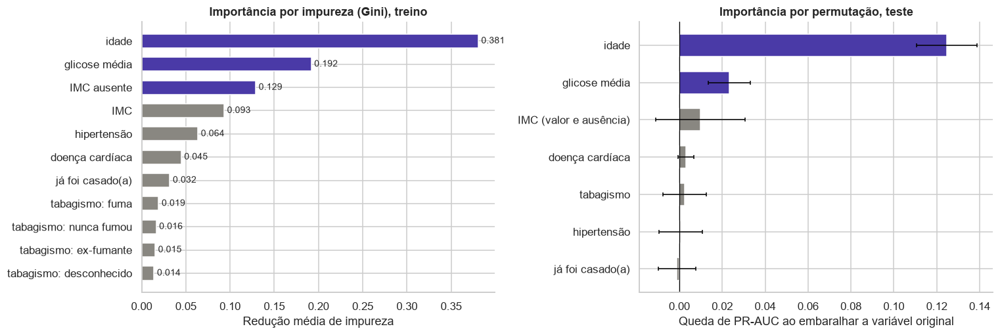
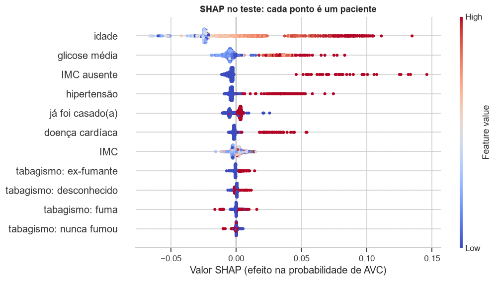
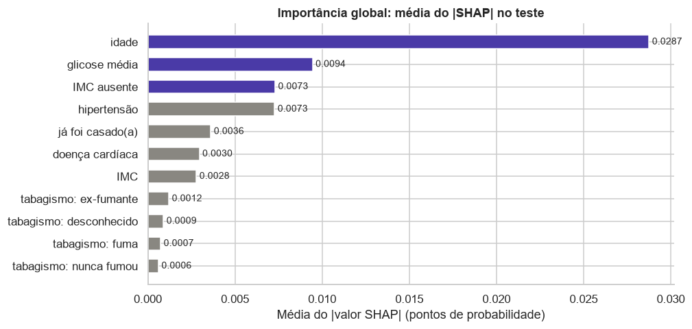
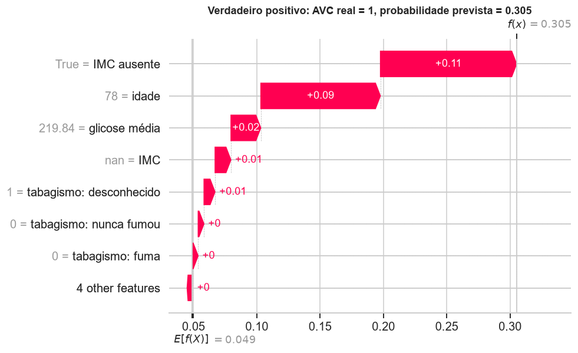
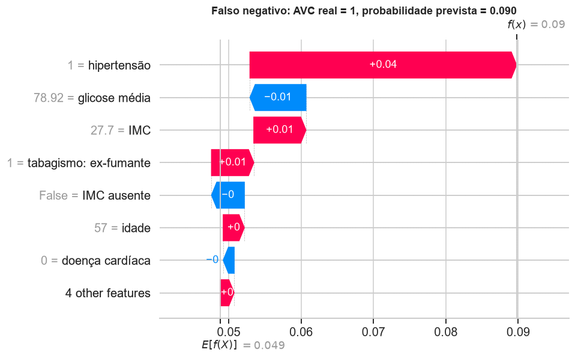
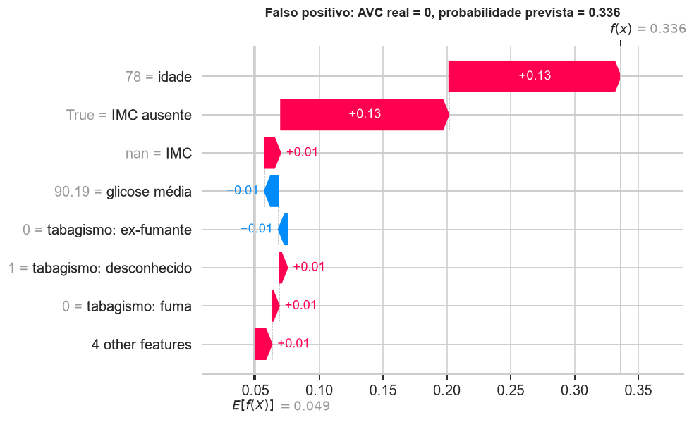

Interpretação¶
Seção 3 da APS2. O código completo está no notebook 04. Três olhares sobre o que os modelos aprenderam: os coeficientes da regressão logística, as importâncias da Random Forest e os valores SHAP do modelo final.
1. Regressão logística: os 3 maiores coeficientes¶
Modelo: a regressão logística ajustada (L1, C = 0,32) com o pipeline da APS1.
Cuidado com a escala. As contínuas foram padronizadas (desvio 1), mas as binárias e o one-hot ficaram em 0/1, com desvio bem menor (0,20 no IMC ausente, 0,29 na hipertensão). Comparar coeficientes brutos favorece as binárias, porque um salto de 0 a 1 equivale a vários desvios delas. Por isso o ranking usa coeficiente × desvio padrão da feature: o efeito de +1 desvio em qualquer feature, numa escala comum.

| Feature | Coeficiente bruto | Desvio | Coef. × desvio | Razão de chances | Leitura |
|---|---|---|---|---|---|
| idade | 1,57 | 1,00 | 1,57 | 4,8 | a cada 22,6 anos a mais |
| IMC ausente | 1,34 | 0,20 | 0,26 | 3,8 | não ter IMC registrado |
| glicose média | 0,17 | 1,00 | 0,17 | 1,2 | a cada desvio de log-glicose |
| hipertensão | 0,38 | 0,29 | 0,11 | 1,5 | ter hipertensão |
- Idade: de longe o maior efeito, como a APS1 antecipava (mediana de 70 anos nos casos contra 43).
- IMC ausente: não é efeito biológico. É o sinal da APS1 (19,9% de AVC entre quem não tem IMC), preservado pelo indicador criado no pré-processamento, e que quase desaparece no teste (ver Discussão crítica).
- Glicose: a logística só consegue um efeito linear em log-glicose, e por isso aproveita pouco o grupo com glicose acima de 170, o de maior risco na APS1.
Pelos coeficientes brutos, a hipertensão (0,38) estaria em 3º, à frente da glicose: é exatamente o efeito de escala. A L1 zerou 6 coeficientes, entre eles gênero e três colunas de trabalho (a mesma direção da mudança de pipeline, obtida de forma independente) e a doença cardíaca. Há dois motivos para esse zero: parte do efeito dela já está na idade e na hipertensão, e, com desvio de só 0,23, ela precisaria de um coeficiente cerca de 4 vezes maior que uma contínua para ter o mesmo efeito, o que a L1 pune proporcionalmente. As razões de chances estão encolhidas em direção a 1 pela penalidade: são estimativas conservadoras.
2. Random Forest: as 3 features mais importantes¶

| Feature | Importância por impureza (treino) | Queda de PR-AUC por permutação (teste) |
|---|---|---|
| idade | 0,381 | 0,125 ± 0,014 |
| glicose média | 0,192 | 0,023 ± 0,010 |
| IMC ausente | 0,129 | 0,010 ± 0,021 (IMC e ausência juntos) |
A importância por impureza é calculada no treino e favorece variáveis contínuas, que oferecem mais pontos de corte (Strobl et al., 2007). Por isso ela é conferida com a importância por permutação no teste.
- A permutação confirma a idade (mais da metade do valor do modelo) e a glicose em segundo. O grupo com glicose alta, mantido como outlier na APS1, é o segundo sinal mais forte.
- O IMC ausente é importante no treino, mas no teste embaralhá-lo não muda nada distinguível de zero. As duas medidas não se contradizem: a impureza mostra o que o modelo aprendeu no treino, e a permutação mostra que esse aprendizado não rende no teste, onde o sinal da ausência quase some.
- O IMC contínuo é o 4º por impureza (0,093) porque oferece muitos cortes possíveis, um exemplo do viés da impureza.
3. SHAP¶
SHAP divide a diferença entre a predição de um paciente e a predição média entre as features, usando os valores de Shapley (Lundberg & Lee, 2017); para florestas, o TreeExplainer calcula esses valores de forma exata (Lundberg et al., 2020). Aqui eles estão na escala de probabilidade: valor base (0,049) + soma dos SHAP = probabilidade prevista, verificado no notebook com erro máximo de 6 × 10⁻¹⁶. O SHAP explica o que o modelo faz, não o que é verdade nos dados.
Importância global¶


A ordem pela média do |SHAP| é idade, glicose, IMC ausente e hipertensão: as três primeiras coincidem com a importância por impureza.
| Feature | Efeito |
|---|---|
| idade | idades baixas tiram até ~0,07 da probabilidade; idades altas somam até ~0,13. O efeito acelera nos mais velhos, a não linearidade que a APS1 descrevia |
| glicose | só valores altos empurram para cima; os normais quase não mexem. É um efeito de limiar, que a regressão logística (linear na log-glicose) não captura |
| IMC ausente | para os 38 pacientes sem IMC, soma de +0,05 a +0,15. Mas só 3 deles tiveram AVC (7,9%): o modelo prevê em média 13,8% para esse grupo e sinaliza 24 dos 38, superestimando-o |
| hipertensão e doença cardíaca | ter a condição soma até ~0,07; não ter quase não muda nada |
| IMC e tabagismo | efeitos pequenos e misturados |
Três predições individuais¶
Escolhidos para cobrir o acerto e os dois tipos de erro: o verdadeiro positivo com maior probabilidade, o falso negativo mais perto do limiar e o falso positivo com maior probabilidade. Cada gráfico parte do valor base (embaixo) e soma as contribuições até a probabilidade prevista (em cima).
Verdadeiro positivo: homem, 78 anos, doença cardíaca, glicose 220, sem IMC registrado. Probabilidade 0,305, 6 vezes a média.

IMC ausente (+0,11), idade (+0,09) e glicose (+0,02) explicam a predição. É o perfil de alto risco da APS1. A doença cardíaca quase não contribui: nas árvores rasas, idade e glicose já separam esse paciente.
Falso negativo: homem, 57 anos, hipertenso, ex-fumante, glicose 79, IMC 27,7. Probabilidade 0,0898, a 0,0003 do limiar (0,0901).

A hipertensão soma +0,04 e tabagismo e IMC somam um pouco; a glicose normal tira 0,01 e a idade, perto da média do dataset, quase não conta. É o perfil intermediário em que o modelo hesita: um fator de risco forte, sem idade avançada nem glicose alta. Não é um caso isolado: 4 dos 17 falsos negativos ficaram a menos de 0,005 do limiar, o que mostra o quanto o recall é sensível à escolha exata do limiar.
Falso positivo: homem, 78 anos, hipertenso, glicose 90, sem IMC registrado. Probabilidade 0,336, a maior entre os pacientes sem AVC do teste.

Idade (+0,13) e IMC ausente (+0,13) explicam quase tudo. Metade da probabilidade vem da falta de um dado.
O verdadeiro positivo e o falso positivo recebem probabilidades parecidas pelos mesmos motivos, e só um teve AVC: o modelo ordena risco, mas não diagnostica.